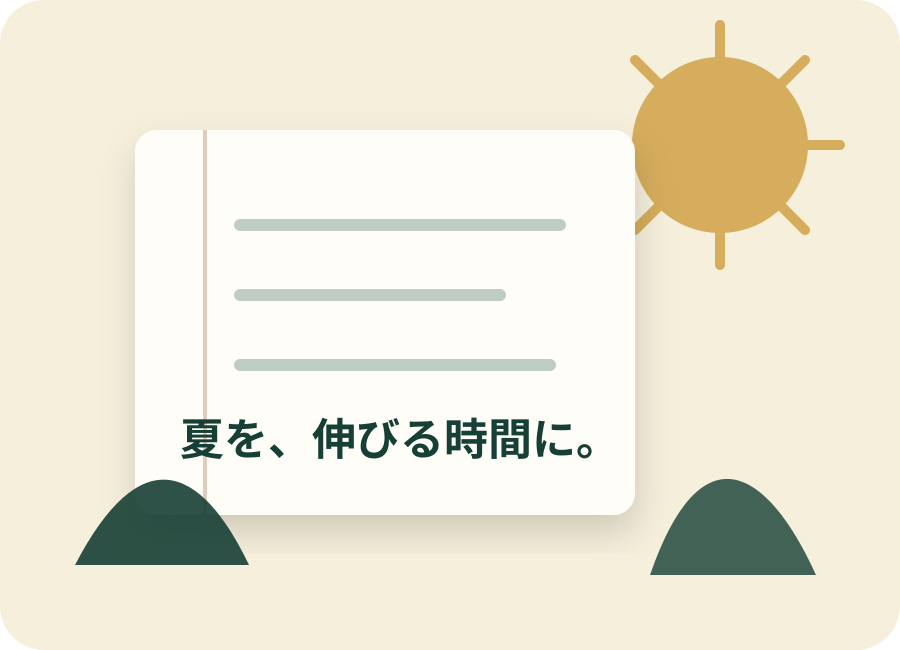

SPRING
春期授業
前学年の重要単元を振り返り、新学年に向けた準備を進めます。
- 前学年の総復習
- 苦手分野の確認
- 新学年への準備
SEASONAL COURSE
まとまった時間だからこそ、できる学習があります。

ABOUT
学校の授業が進まない長期休暇は、これまでの学習を整理し、苦手な単元に集中できる期間です。
春期・夏期・冬期授業では、これまでに習った内容の復習、苦手克服、次学期への準備、高校受験対策など、生徒さんごとの課題に合わせて取り組みます。
SPRING
前学年の重要単元を振り返り、新学年に向けた準備を進めます。
SUMMER
長い夏休みを活用し、総復習、苦手教科、高校受験対策に重点的に取り組みます。
WINTER
短期間で重要事項を確認し、学年末や高校入試に備えます。
SUMMER COURSE
夏休みは、普段より多くの学習時間を確保しやすい一方、過ごし方によって学力差が生まれやすい期間です。
これまでの復習を行い、苦手科目を得意科目に変えるための時間として活用します。
これまで学んだ内容を整理し、理解度を確認します。
普段は時間をかけにくい単元に集中して取り組みます。
中学3年生は入試を見据え、基礎固めと演習を進めます。
PAST EXAMPLE — 2024
以下は2年前の募集チラシから確認できる内容です。現在の日程・教科・料金ではありません。
2026年度以降の募集内容は変更されている可能性があります。現在の内容は必ずお問い合わせください。
| コース | 対象 | 時間・回数 | 教科 | 受講料（税込） |
|---|---|---|---|---|
| 小学生・標準コース | 小2〜小6 | 50分×8回 | 国語か算数 | 8,800円 |
| 中学生・標準コース | 中1 | 50分×16回 | 数学・英語 | 15,400円 |
| 中学生・標準コース | 中2 | 50分×16回 | 国語・理科 | 15,400円 |
| 中学生・受験コース | 中3 | 50分×24回 | 国語・英語・理科 | 22,000円 |
※2024年度は別途教材費として、1教科550円が必要でした。
※表中の教科以外を希望する場合も相談可能と案内されていました。困っている教科について、学習方法の相談にも対応していました。
LATEST INFORMATION
2024年度の実施例は上記のとおりですが、期間、対象学年、教科、授業回数、受講料は年度ごとに異なります。最新の募集内容はお問い合わせください。
特別授業を問い合わせるCONTACT
苦手科目、学校の授業、定期テスト、高校受験。現在の状況から一緒に整理します。